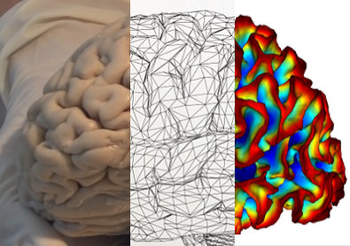
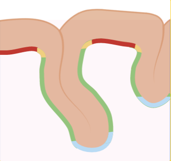
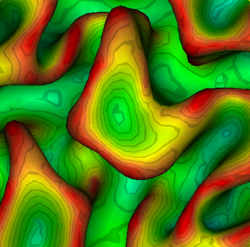

La Neuro-Imagerie
Quels sont les bases et les enjeux de l'imagerie cérébrale ?
Explorer !

Les structures corticales
Comment définir et détecter les différentes structures corticales qui composent le cortex ?
Découvrir !

La profondeur suclale
Introduction à la profondeur sulcale
Learn More
Toutes les ressources
Décourvre la liste complète des ressources pédagogiques.
Voir